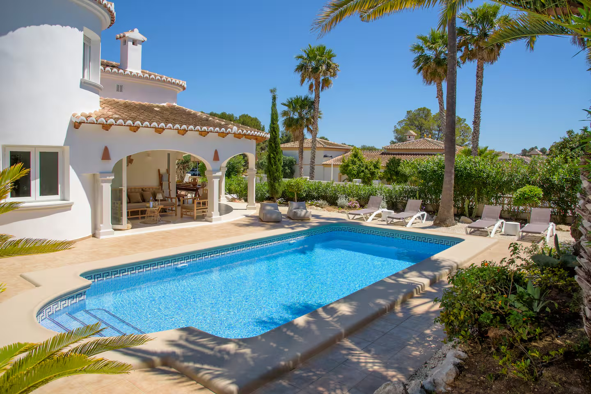
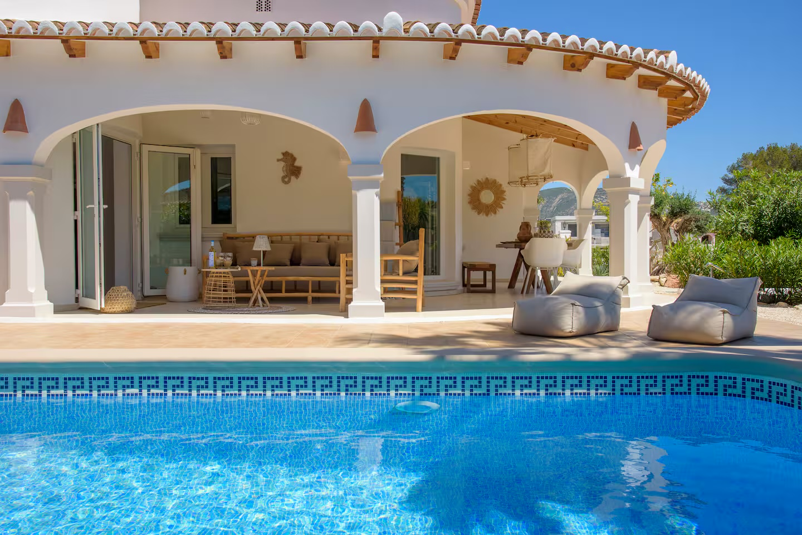
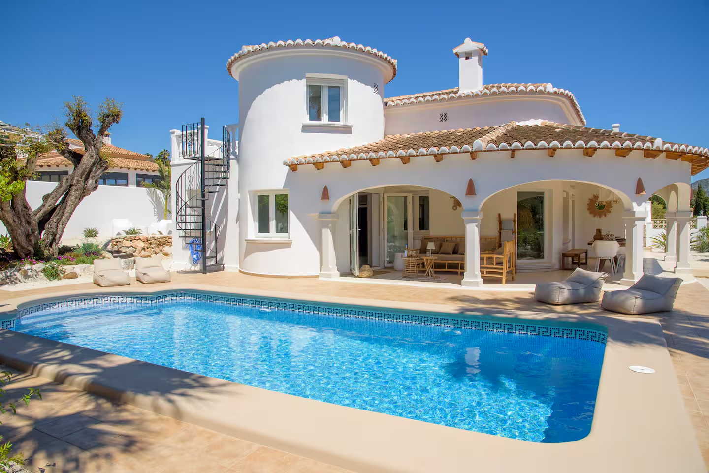
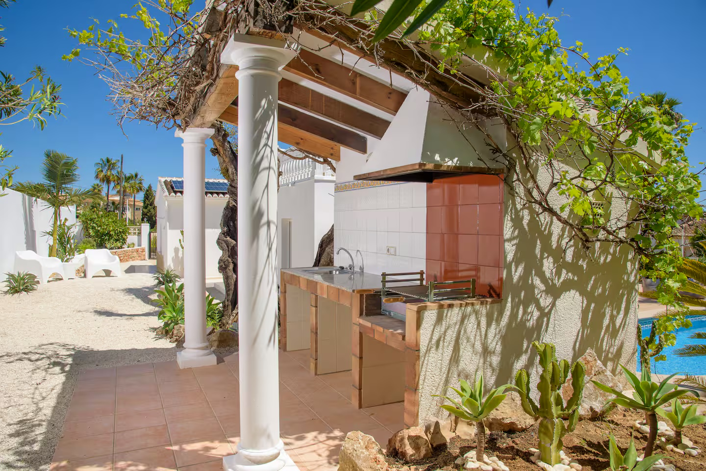
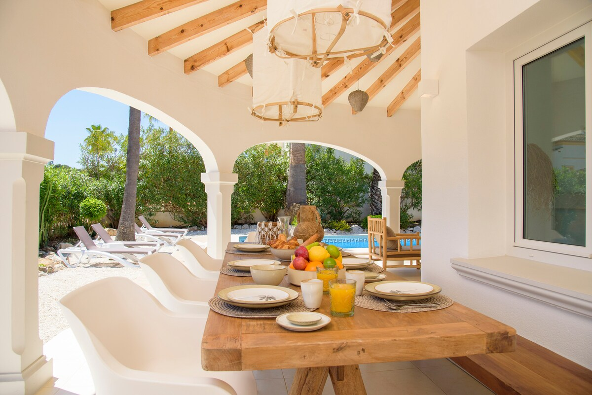
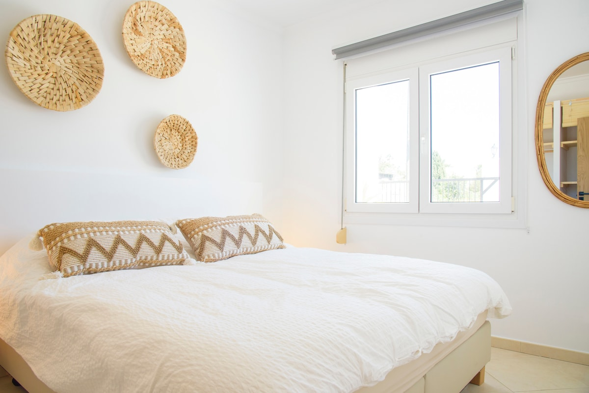

Foto volgt
Playa El Portet
Een beschutte baai met ondiep, helder water — het mooiste strand van de omgeving.
Villa Las Palmeras · Costa Blanca
Een vrijstaande villa voor 8 gasten met verwarmd zoutwaterzwembad, zomerkeuken en een eigen torenkamer — op een van de zonnigste plekken van de Spaanse kust.
★ 4,71 op Airbnb Superhost, 9 jaar ervaring Geregistreerd VT‑482776‑A

Moraira is een van de laatste échte kustdorpen van de Costa Blanca: geen hoogbouw, wel een haven vol visserbootjes, kiezelwitte straatjes en stranden met helder water. Villa Las Palmeras ligt midden in dit dorpse gevoel — je loopt naar de bakker, het strand en de restaurants.
De villa is er klaar voor in elk seizoen: het zoutwaterzwembad is het hele jaar verwarmd, de zomerkeuken met barbecue maakt lange avonden buiten vanzelfsprekend, en de torenkamer is de favoriete slaapplek van ieder kind (en menig volwassene).





Het hele jaar op temperatuur, dag en nacht te gebruiken. Ook in maart of november duik je erin.
Koken en eten doe je buiten, op de patio met meerdere zithoeken in zon en schaduw.
Twee kingsize bedden, een tweepersoonsbed en twee losse bedden — ruimte voor 8 gasten.
Een eigen kamer in de toren, bereikbaar via een buitentrap. Wakker worden met uitzicht.
Volledig uitgeruste keuken binnen, snelle wifi door het hele huis — thuiswerken kan ook.
De auto staat op eigen grond; alles in het dorp ligt op loopafstand.
Van de beoordelingen op Airbnb is 86% vijf sterren. De schoonmaak scoort een perfecte 5,0 en de villa wordt verhuurd door een Superhost met negen jaar ervaring.
beoordeling op Airbnb
Alles ligt dichtbij: het zandstrand van El Portet, de haven met vismarkt, wijngaarden in het achterland en de boulevards van Calpe en Jávea op een kwartier rijden.
Een beschutte baai met ondiep, helder water — het mooiste strand van de omgeving.
Van tapas aan de haven tot sterrenniveau: Moraira heeft een opvallend goede keuken.
Vrijdagmarkt in het dorp, moscatel-wijngaarden en bergdorpjes op korte afstand.
Bekijk de beschikbaarheid van Villa Las Palmeras en boek rechtstreeks. Vragen over het huis of de omgeving? We denken graag mee.
Bekijk beschikbaarheid